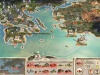

Antigua Grecia
 De: La Frikipedia, la enciclopedia extremadamente seria.
De: La Frikipedia, la enciclopedia extremadamente seria.
| De la serie imperios antiguos:
|
| Ηελενα μι πολλα κον μελενα
|
|
| Lema: Vini Varati Donsimón
|
Himno: ξυπαμε λα μινγα Δομινγα
|

|
| Capital(es)
|
Atenas
|
| Mayor ciudad
|
Atenas
|
| Lenguas oficiales
|
Letras raras
|
| Religión oficial
|
Politeísmo, Filosofía y gimnasia
|
| Gobierno
|
República
|
El Macedonio Magno
|
Alejandro Magno
|
| Fecha de fundación
|
S. -V
|
| Caída
|
S. +V (Amaban la simetría)
|
| Edad de oro
|
Con Pericles
|
| Periodo de Estancamiento o reseción
|
Poquito después de con Pericles
|
| Máxima Extensión
|
Por todo las península; era mucha área pero con muchas islitas
|
| Forma de economía
|
Comercio
|
| Estados que se despacho
|
Ni una sola, nada más colonias
|
| Población calculada
|
10 millones de tíos con sábanas
|
| Moneda
|
El Dracma, luego el Lero
|
| Zona horaria
|
GTM +II
|
| Legado(s)
|
Quinimil Filósofos y la democracia
|
| ¿Por que se vino abajo?
|
Véase: Imperio Romano
|
| πολλα εμπιναδα
|
Antigua Grecia (no confundir con la actual Grecia) fue el primer estado en tener una maldita república, y tuvo personajes famosos como Sócrates (del que hablaremos mas tarde) o Hércules (del que también hablaremos ahora).
Su historia
La Antigua persas que no sabían nada de fútbol.
Pueblitos de la antigua Grecia
Era un grupo de ciudades estados que se mataban entre sí para ver quien era el mejor seguramente eran lo bastante débiles y idiotas para no darse cuenta de la amenaza del norte que se les venía.
Las destacadas son:
- Atenas: Una ciudad llena de fundamentalistas filosos con problemas existenciales. En un momento llegó a dominar toda Grecia pero fue aniquilada por la peste espartana.
- Esparta: era una ciudad tipo cuartel se dice que los hombres fuertes y machos provienen de ahí pero desgraciadamente todas esas juventudes espartanas cayeron una por una en Termopilas.
- Tebas: una ciudad de mierda cuya única fama es haber eliminado a esparta que estaba débil por la peste y las guerras con Roma.
- Cádiz: fundada por Hércules, sus habitantes dicen ser su descendiente aunque nadie les crea y es la única ciudad griega que todavía queda en pie en España,con el tiempo se independizó de Grecia y fundaron el reino de Tartessos.
Alejandro Magno
Muchos científicos creen, que Alejandro Majono, fue el primer rey en destruir una república. Alejandro Majono, rey de los yogures de Macedonia, llegó hasta la Antigua Grecia, donde se cree que sobornó a todos los alcaldes de la Antigua Grecia (igual que Cachuli en Marbella). Aunque la verdadera historia fue, que Alejandro Majono, con sus yogures de macedonia, derrotó a los yogures griegos.
Alejandro Majonono convertiría a los yogures griegos en yogures de macedonia, algo insólito en esa época, gobernando con su Cucharón a los griegos y los pobres persas y otros muchos tíos que no llevaban puesta una sábana hasta que llegó él, y les enseñó la técnica del yogur con la que muchos pueblos fueron sometidos.
El fin de la Antigua Grecia
La república de la Antigua Grecia, acabó, cuando un terrible pueblo llamado el Imperio Ramono dirigido por Ramón (el Imperio Ramono, también es conocido como los Estados Unidos de América), gobernado por el malvado tirano George W. Bush lanzó una bomba atómica sobre la capital de la Antigua Grecia: Atenas. Podemos ver a la derecha una imagen que muestra como quedó la ciudad de Atenas tras el bombardeo.
Ruinas de la ciudad de Atenas después de la bomba de hiroshima.
Personajes famosos
- Hércules: el tío más fuerte de todos incluso en su talón
- Aquiles: mas fuerte que Hércules pero débil en el talón (por eso gano Hércules)
- Helena de Troya:típica mujer esatdounidense, se casó con uno, se fugó con otro, se liaron ambos a ostias por ella y al final ella desaparece.
- Ulyses:despúes de estar en a guerra de Vietnam y para no volverse tarumba se fue e puticlubs por todo el mediterráneo y parte del Atlántico, regresó sano y fuerte al lado de su mujer 10 años despúes de haber salido a buscar tabaco.
- Edipo:rey de Tebas,mató a su padre y se casó con su madre, para pagarse todos sus gastos suntuarios escribió su autobiografía en bestseller, fue al programa de Ana Rosa, Sálvame,Aquí hay tomate y acabó dando el mensaje de Navidad del rey en Telecinco.
- Sócrates: el filósofo que no sabía nada.
- Alejandro Majono : el rey que conquistó todo Oriente Medio he invento el yogurt, asesinado por Darth Valatar.
- Jenofonte:Tras estar en la guerra de Vietnam intentó volver a casa, pero como no iva en el grupito de Ulyses pues regresó antes a casa enfermo, loco y con cien cepas diferentes del virus del Ébola, para no dejar a su parienta en la mendicidad escribió un best-seller(la Anábasis).
- El charly: este se ha colado aquí.
- Galeno:pensaba que el cuerpo humano era un saco con varios líquidos y cuando había demasiados líquidos había que sangrar al enfermo.
- Arquímedes:Inventó la bomba atómica(pero no a construyó no era tan imbécil como el esatdounidense Oppenheimer).
- Pericles:gran cacique de Atenas, tatarabuelo de tipos como Baltar, Ramón Luis Valcárcely Cachuli.
- Aristóteles: maestro de Alejandro majono y hábil cocinero.
- Leónidas: Un espartano que le gustaba mucho matar, hasta que lo mataron a el.
- Platón: aprendiz de Sócrates y herramienta útil del cocinero Aristóteles.
Dioses
Véase Los Dioses Griegos
- Zeus: el dios de los dioses y siervo de Alejandro.
- Cronos: el dios del cronómetro, nacido en suiza.
- Marte: el dios de la guerra (aunque solo peleaba los martes por ser su día).
- Atenea: la diosa de la sabiduría y que también protegía a Atenas (aunque fallo cuando llegaron los ramones).
- Neptuno (dios) : el dios del hagua (estaba de la próstata).
- Afrodita: la diosa de la fertilidad y compañera de mazinger.
Autor(es):
- Krusher
- Nexo
- Doctor grijander
- Alexmg666
- Frikiman
- Aque
- Grifada
- Roms
- Dorian
- Hank
Frikipedia 2005-2016, Licencia
GFDL 1.2 - Extraído por FrikiLeaks